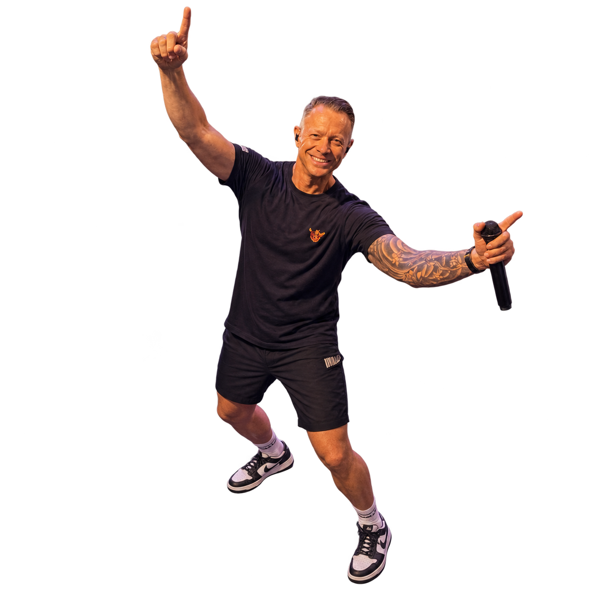

VAN MC WARRIOR. VOOR JOUW VOLGENDE SET.
MINDER KLIKKEN.
MEER KNALLEN.
Een map vol tracks. Eén sterke set. Beatwarrior zet je muziek in oplopende BPM-volgorde, plant drie cuepoints per nummer en helpt je naar een USB die klaar is voor de booth.
Download voor WindowsVERSIE 1.9.9 · WINDOWS 64-BIT · 15,9 MB
De app installeer je op een Windows-pc. Op je telefoon kun je deze pagina en de handleiding bekijken.
Kost je niks. Een follow? Die is welkom.
Blij met Beatwarrior? Volg @mcwarriorofficial

JE BATTLEPLAN IN DRIE STAPPEN
MAP. PLAYLIST. BOOTH.
Voor die last-minute set, je volgende optreden
of gewoon een avond lekker draaien.
- 01
Kies je muziek.
Selecteer een map op je computer en vink de tracks aan die jij wilt gebruiken.
- 02
Laat je set bouwen.
Beatwarrior analyseert je tracks, laat de BPM oplopen en plant A, B en C met aandacht voor toonsoort, beats en muzikale frases.
- 03
Bewapen je stick.
Sla je playlist op. Kies bij USB-export je playlist en je USB-stick en zet je muziek over, vanuit dezelfde app.
DRIE PUNTEN. ÉÉN PLAN.
JOUW MIX.
MET EEN VOORSPRONG.
De volgende track wordt samen met de vorige gepland. Zo krijg je een startpunt voor je overgangen, op basis van de beatgrid en de opbouw van je muziek.
Wat betekenen A, B en C?- A Instart
- Hier start je dit nummer.
- B Volgende track
- Hier start je de volgende track op diens A.
- C Uitmix
- Het geplande punt waarop de volgende track overneemt.
GEEN ABONNEMENT. GEWOON DRAAIEN.
READY TO
UNLEASH THE DROP?
Bibliotheek, spelers, playlistmaker en USB-export.
Alles bij elkaar. Helemaal gratis.
Moet ik betalen of je eerst volgen?
Nee. Beatwarrior is gratis en de download is direct beschikbaar. Een follow op Instagram is een leuke manier om MC Warrior te steunen, helemaal vrijblijvend.
Waarop kan ik Beatwarrior installeren?
Deze download is de installer voor Windows 64-bit. Er zit hier geen Mac-versie bij.
Gaat Beatwarrior ook voor mij mixen?
Beatwarrior bereidt je playlist, volgorde en cuepoints voor. Jij draait de set en bedient tempo, EQ en faders. De cueberekening gebruikt automatisch de beste beschikbare muziekanalyse.
Kan ik oude cues en loops wissen?
Ja. Rechtsklik in de app op een playlist of een track en kies ‘Verwijder alle hot cues, memory cues en loops’. Lees hoe dit werkt.
GRATIS SOFTWARE. GROTE ENERGIE.
LIKE THE APP? FOLLOW THE WARRIOR.
Neem een kijkje achter de microfoon. Shows, muziek en een flinke dosis Warrior.